|
Yuanze Lin I am a PhD student in the Computer Science Department at the University of Oxford, where I work with Prof. Ronald Clark. My research focuses on diffusion and vision-language models. Before going to Oxford, I had a great time at Microsoft Redmond, MSR Asia, CCVL @ Johns Hopkins University, Alibaba, etc. I appreciate collaborating with distinguished professors and researchers from these institutions. My research interest lies in machine learning and its applications, especially: • Multimodal large language models (MLLMs) • Image/Video generation and editing based on diffusion models • The applicability of large language models (LLMs) |
{kind=link}
News[07/2026] Started a research internship at Microsoft Research Cambridge. [09/2025] IllumiCraft accepted to NeurIPS 2025. [06/2025] We introduced IllumiCraft for high-fidelity video relighting. [04/2025] Olympus was selected as a Highlight at CVPR 2025! [03/2025] Released the code of Olympus (CVPR 2025) for vision tasks. [02/2025] Olympus accepted to CVPR 2025. [12/2024] We presented Olympus to solve over 20 different computer vision tasks. [08/2024] Released the code of Learnable Regions (CVPR2024) for image editing. [07/2024] Rethinking Visual Prompting for MLLMs with External Knowledge was presented. [03/2024] Check out DreamPolisher for high-quality text-to-3D generation! [02/2024] Started a research internship at GenAI @ Microsoft. [02/2024] Text-Driven Image Editing via Learnable Regions accepted to CVPR 2024. [10/2023] Started my PhD journey at CS @ University of Oxford. [07/2023] SMAUG accepted to ICCV 2023. [09/2022] REVIVE accepted to NeurIPS 2022. [03/2022] Pseudo-Q and AdaFocus V2 accepted to CVPR 2022. [07/2021] MCN accepted to ICCV 2021. [06/2021] EVA-GCN accepted to CVPR 2021 AMFG Workshop and won 🏆 Best Paper Award |
Selected PublicationsPapers are sorted by recency, * denotes equal contribution. |
|
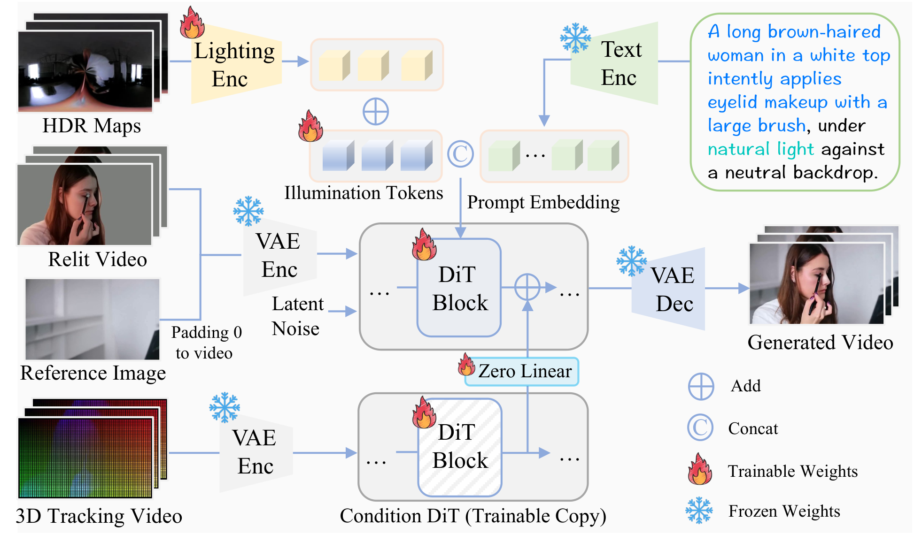 |
IllumiCraft: Unified Geometry and Illumination Diffusion for Controllable Video Generation
Yuanze Lin, Yi-Wen Chen, Yi-Hsuan Tsai, Ronald Clark, Ming-Hsuan Yang NeurIPS, 2025 ArXiv / Project Page / Video / Code / BibTeX We present IllumiCraft, a unified framework that unifies geometry and illumination diffusion for controllable video generation. |
|
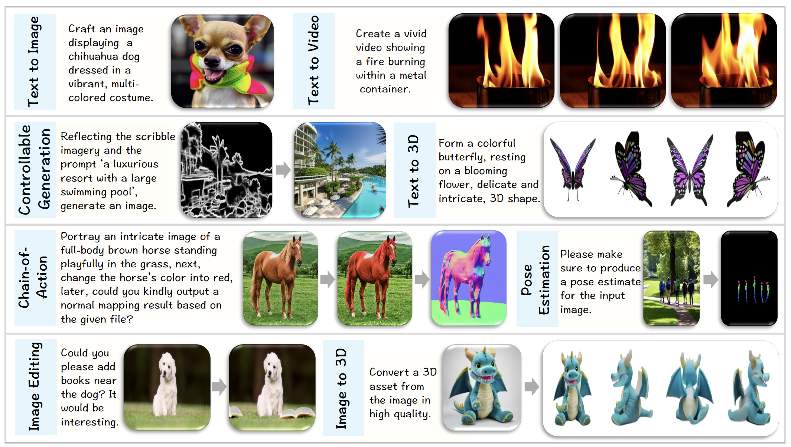 |
Olympus: A Universal Task Router for Computer Vision Tasks
Yuanze Lin, Yunsheng Li, Dongdong Chen, Weijian Xu, Ronald Clark, Philip Torr CVPR, 2025 ★ Highlight ArXiv / Project Page / Video / Poster / Code / BibTeX We introduce Olympus, a new approach that transforms Multimodal Large Language Models (MLLMs) into a unified framework capable of handling a wide array of computer vision tasks. |
|
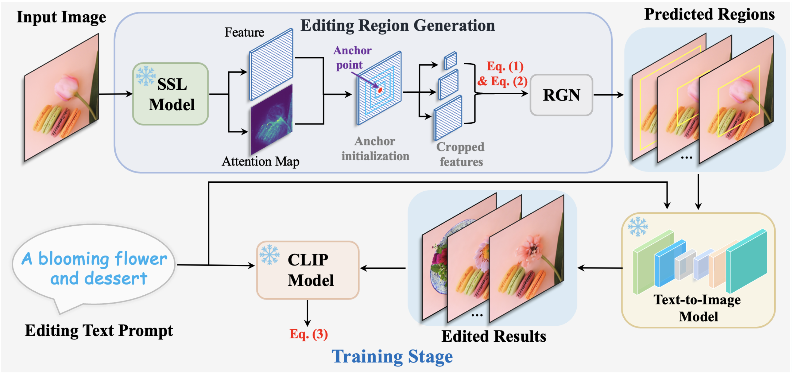 |
Text-Driven Image Editing via Learnable Regions
Yuanze Lin, Yi-Wen Chen, Yi-Hsuan Tsai, Lu Jiang, Ming-Hsuan Yang CVPR, 2024 ArXiv / Project Page / Video / Poster / Code / BibTeX Introduce a region-based editing network that is trained to generate editing regions utilizing a text-driven editing loss with CLIP guidance, our method can edit the given images based on freely provided language descriptions. |
|
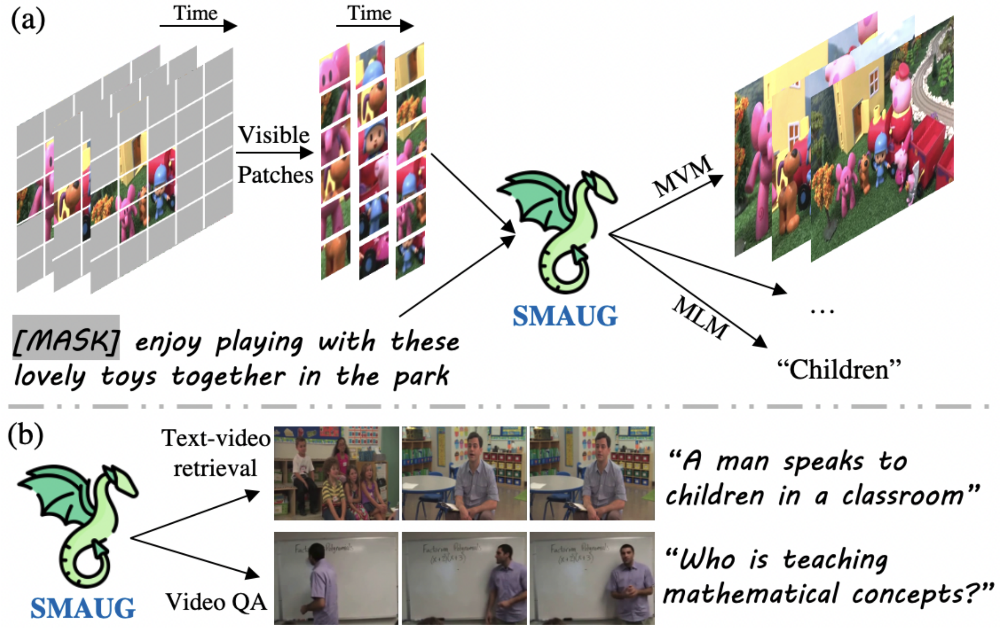 |
SMAUG: Sparse Masked Autoencoder for Efficient Video-Language Pre-training
Yuanze Lin, Chen Wei, Huiyu Wang, Alan Yuille, Cihang Xie ICCV, 2023 ArXiv / Poster / Slides / BibTeX Propose an efficient video-language pre-training framework, which enjoys both competitive performances on text-to-video retrieval and video question answering tasks, and much less pre-training costs by 1.9X or more. |
|
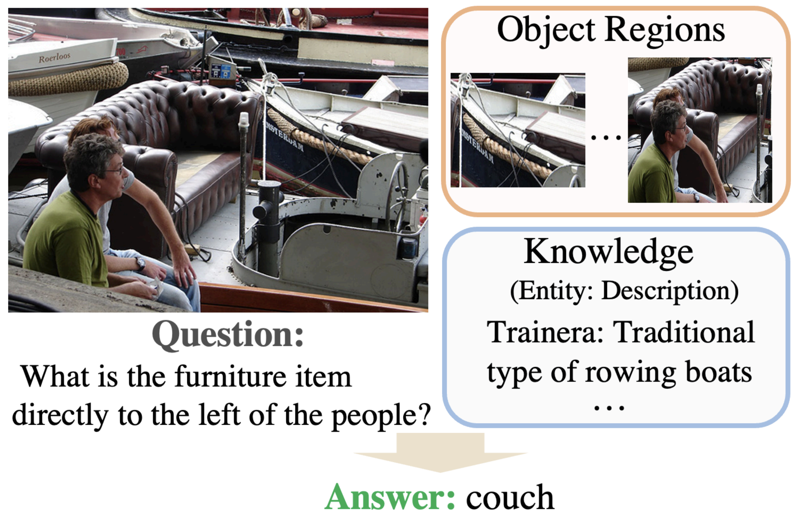 |
REVIVE: Regional Visual Representation Matters in Knowledge-Based Visual Question Answering
Yuanze Lin, Yujia Xie, Dongdong Chen, Yichong Xu, Chenguang Zhu, Lu Yuan NeurIPS, 2022 ArXiv / Poster / Supplementary Material / OpenReview / Code / BibTeX Propose REVIVE, a knowledge-based VQA method that exploits explicit object-region information in both the knowledge-retrieval and answering stages, achieving state-of-the-art performance on the OK-VQA dataset. |
|
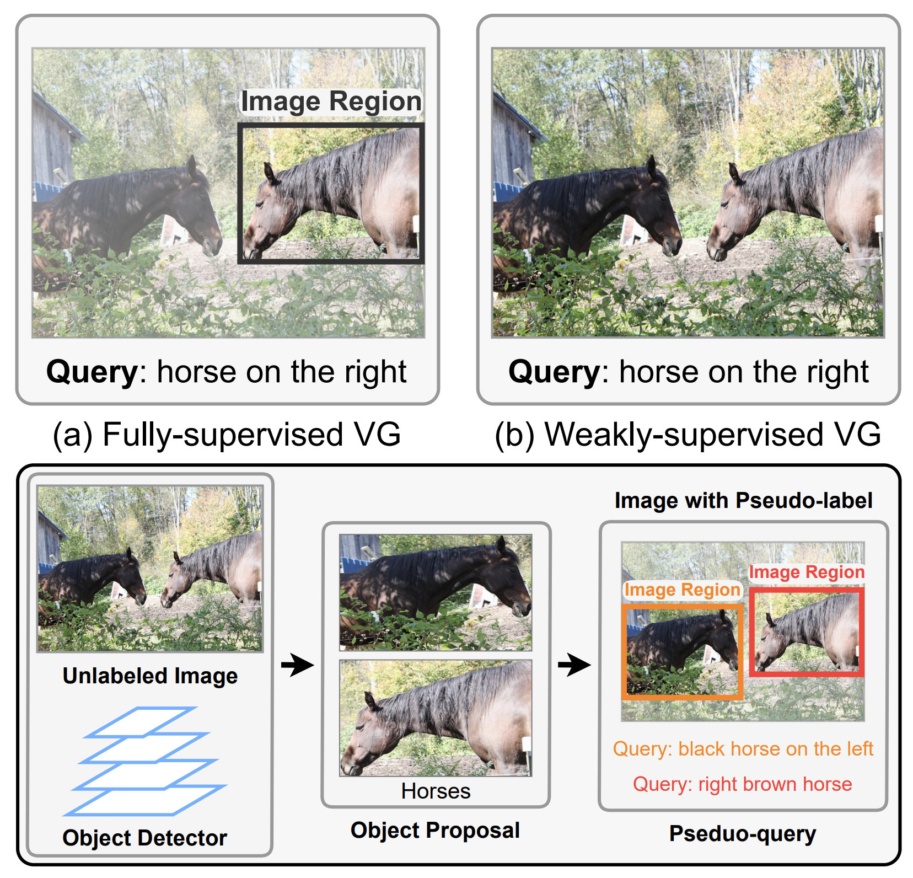 |
Pseudo-Q: Generating Pseudo Language Queries for Visual Grounding
Haojun Jiang*, Yuanze Lin*, Dongchen Han, Shiji Song, Gao Huang CVPR, 2022 ArXiv / Poster / Code / BibTeX Present Pseudo-Q to automatically generate pseudo language queries for supervised training, which achieves superior or comparable performance compared to existing weakly-supervised visual grounding methods on five datasets. |
|
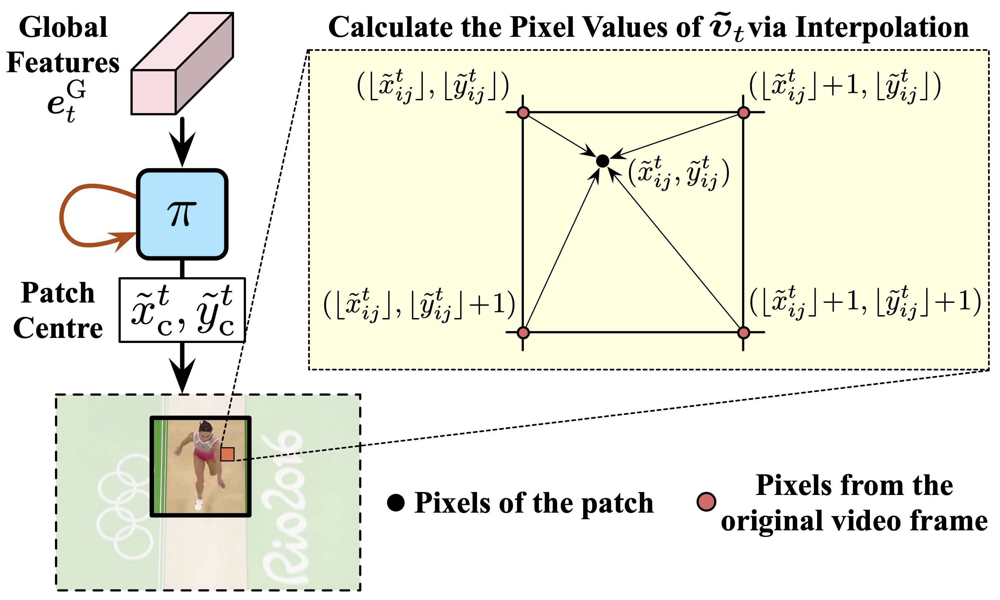 |
AdaFocus V2: End-to-End Training of Spatial Dynamic Networks for Video Recognition
Yulin Wang*, Yang Yue*, Yuanze Lin, Haojun Jiang, Zihang Lai, Victor Kulikov, Nikita Orlov, Humphrey Shi, Gao Huang CVPR, 2022 ArXiv / Code / BibTeX Reformulate AdaFocus as a simple one-stage algorithm via a differentiable interpolation-based patch selection and an improved training scheme, with extensive experiments on six benchmarks demonstrating its effectiveness. |
|
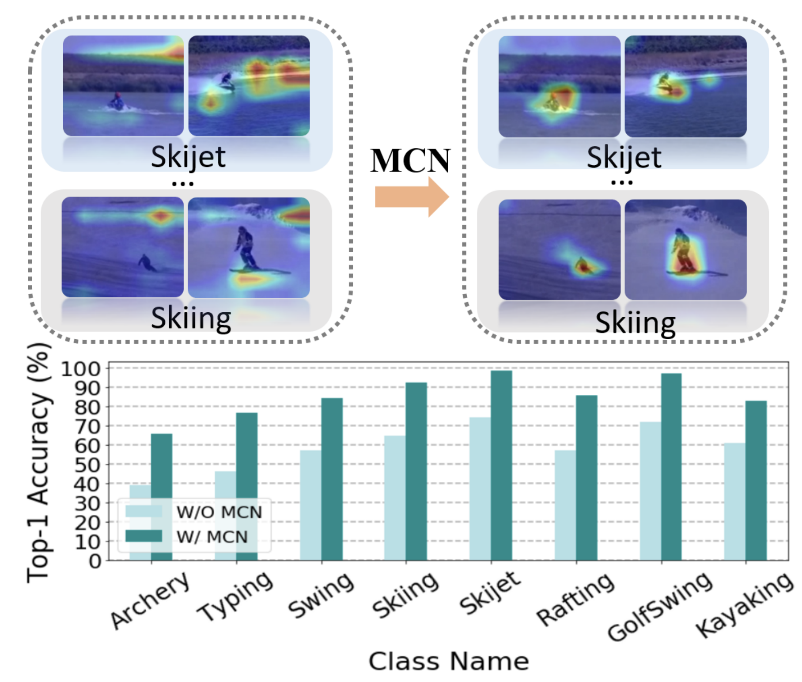 |
Self-supervised video representation learning with meta-contrastive network
Yuanze Lin, Xun Guo, Yan Lu ICCV, 2021 ArXiv / Poster / BibTeX Propose the Meta-Contrastive Network (MCN), combining contrastive learning and meta-learning for pre-training; it outperforms state-of-the-art methods on UCF101 and HMDB51 for video action recognition and retrieval. |
|
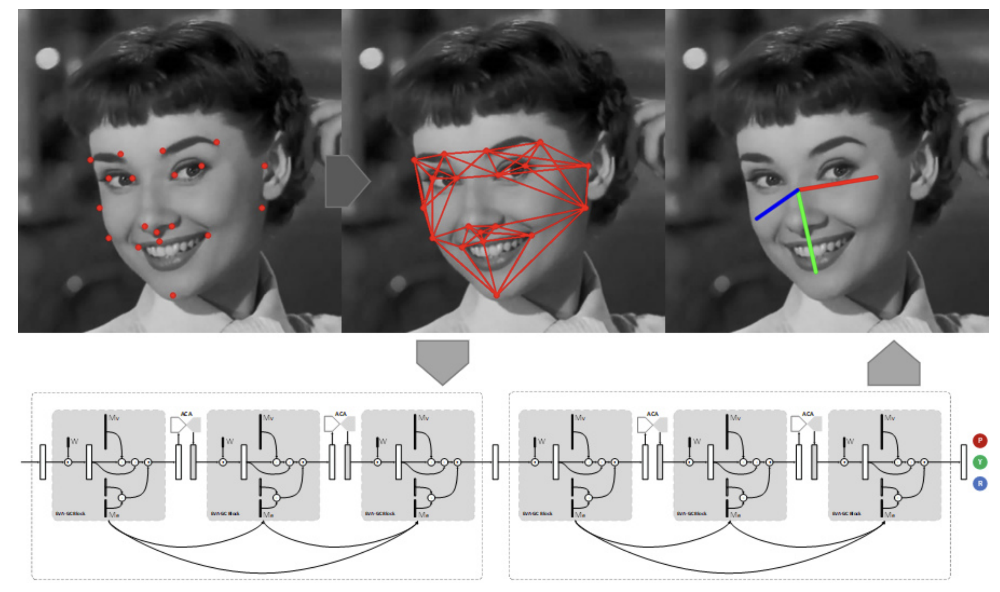 |
EVA-GCN: Head Pose Estimation Based on Graph Convolutional Networks
Miao Xin, Shentong Mo, Yuanze Lin CVPR AMFG Workshop, 2021 🏆 Best Paper Award Paper / Code / BibTeX Construct a landmark-connection graph, and propose to leverage the Graph Convolutional Networks (GCN) to model the complex nonlinear mappings between the graph typologies and the head pose angles. |
{kind=link}
{kind=link}
Experiences |
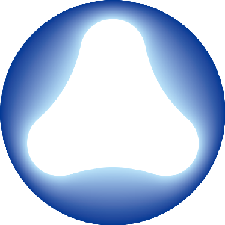
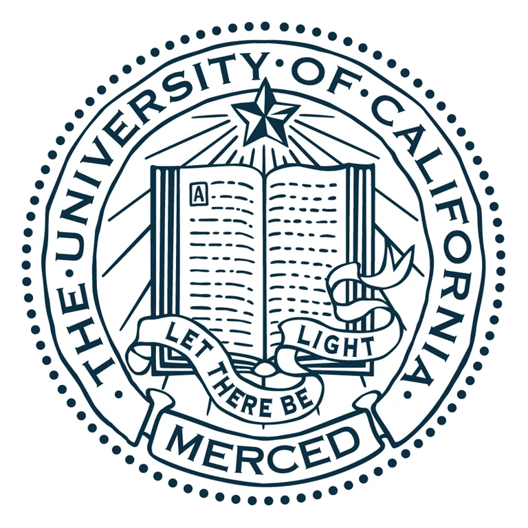
Professional ServicesProgram Comittee: AAAI 2025, AAAI 2026 Journal Reviewer: IJCV 2025 Conference Reviewer: ICLR 2026, AISTATS 2026, CVPR 2026, ECCV 2026 Conference Reviewer: ICLR 2025, AISTATS 2025, CVPR 2025, ICML 2025, ICCV 2025, NeurIPS 2025 Conference Reviewer: ICRA 2024, CVPR 2024, ECCV 2024, NeurIPS 2024 Conference Reviewer: ICLR 2023, CVPR 2023, ICCV 2023, NeurIPS 2023 Conference Reviewer: CVPR 2022 |
|
No web trackers, feel free to see this website Last Update: 07/2026 Template |